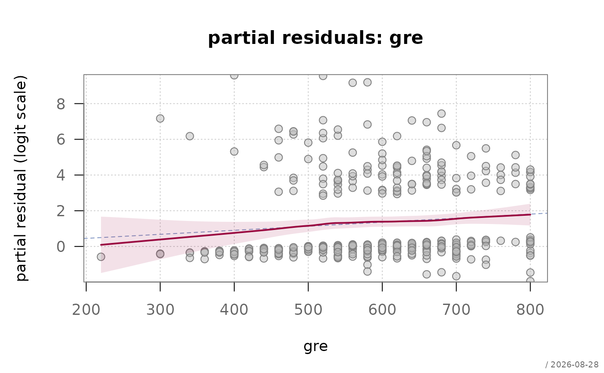

Plots the partial (component-plus-) residuals of one predictor against its values, with a smoother. The logistic model assumes the log odds are linear in each continuous predictor, and this is the plot that checks that assumption term by term.
Usage
plotPartialResid(
x,
term = NULL,
main = NULL,
xlab = NULL,
ylab = NULL,
xlim = NULL,
ylim = NULL,
col = .useTheme,
bg = .useTheme,
pch = .useTheme,
cex = .useTheme,
grid = .useTheme,
box = .useTheme,
smooth = TRUE,
lm = TRUE,
stamp = .useTheme,
...
)Arguments
- x
a fitted logistic model of class
"FitMod"(fitted withfitfn = "logit") or a binomialglm.- term
name of the predictor.
NULL(default) uses the first continuous term in the model;predictors(x, numeric = TRUE)lists the ones this plot can be drawn for.- main
main title.
NULL(default) derives one fromterm;"",NAorFALSEsuppress it.- xlab, ylab
axis labels.
NULLderives them fromterm.- xlim, ylim
axis limits.
- col, bg, pch, cex
point colour, fill, symbol and size.
.useTheme(default) resolves against the active theme.- grid, box
background grid and plot box, following the flexible
TRUE/FALSE/NA/list()pattern.- smooth
the loess smoother and its band.
TRUE(default),FALSE, or a named list passed tolines.loess.- lm
the fitted linear contribution of the term.
TRUE(default),FALSE, or a named list passed tolines.- stamp
corner stamp, passed to the graphics framework.
- ...
further graphical parameters passed to
par()via the internal framework.
Value
invisibly, a data frame with the columns x (the
predictor), partial (the partial residual) and weight.
Details
The partial residual for term \(j\) is $$u_i = \hat\beta_j x_{ij} + (y_i - \hat p_i)/\{\hat p_i(1-\hat p_i)\},$$ the fitted contribution of the term plus the working residual on the logit scale. If the term enters correctly, the smoother follows the straight line; curvature is a direct reading of the transformation the term wants - a bend of one sign suggesting a square term, a logarithmic shape suggesting a log.
The working residual has variance \(1/\{m\hat p(1-\hat p)\}\), so points at extreme fitted probabilities are enormously more variable than those in the middle. The smoother is weighted accordingly (\(w_i = m_i \hat p_i(1-\hat p_i)\)); without the weights the tails of the plot dominate the curve and suggest structure that is not there.
A useful confirmation costs one line: refit with a spline in the suspect term and compare. If the smoother bends but the likelihood ratio test does not, the bend is noise.
See also
model-diagnostics-overview for an overview of the diagnostics for logistic models in alloy.
Examples
fitLogit <- fitMod(admit ~ gre + gpa + rank, Admit, fitfn = "logit")
plotPartialResid(fitLogit, term = "gre")

# confirm a suspected bend against a spline fit
fitSpline <- fitMod(admit ~ splines::ns(gre, 3) + gpa + rank, Admit,
fitfn = "logit")
anova(fitLogit, fitSpline, test = "LRT")
#> Analysis of Deviance Table
#>
#> Model 1: admit ~ gre + gpa + rank
#> Model 2: admit ~ splines::ns(gre, 3) + gpa + rank
#> Resid. Df Resid. Dev Df Deviance Pr(>Chi)
#> 1 394 458.52
#> 2 392 458.18 2 0.33472 0.8459